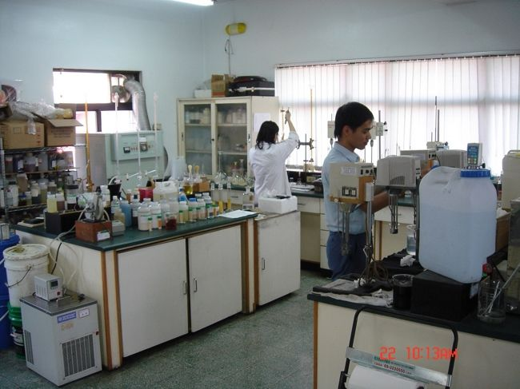
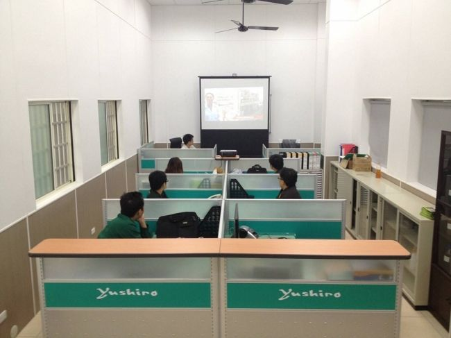

We start with the problemand maximize performance
First we understand your site, then we find the best solution together.
A good product is only the start of a partnership. The Yuan Hua team begins by learning about your machining methods, materials, equipment, oil issues and actual usage, helps evaluate products and solutions based on conditions on site, and continues to follow up on your actual needs after implementation. When issues extend to oil and coolant changes, waste fluid treatment or equipment, we can also connect you with follow-up services as the situation requires.
Every shop's conditions differ,so no single approach fits all
Workpiece material, machines, cutting tools, machining method, water quality, daily management… all of these can affect how an oil actually performs.
So before recommending anything, the Yuan Hua team first learns about the products you currently use, your machining conditions and the problems you're actually facing on site, then discusses the right product or approach with you.
Our goal isn't just to meet a single spec, but to make sure the product performs at its best in your actual process.

From the first conversationto products at work on site
- 01
Understanding your needs
We start by learning about your machining methods, equipment, workpiece materials, current oils and existing problems to get a clear picture of actual operating conditions.
- 02
Product & solution evaluation
Based on performance requirements, operating conditions and budget, we help evaluate the right oil, equipment or approach.
- 03
On-site implementation & usage support
After implementation, we provide follow-up support based on actual usage and keep track of how the product is performing on site.
- 04
Extended follow-up services
When your needs extend to oil changes, coolant changes, wastewater treatment equipment or waste oil / wastewater collection, we help connect the right services for your situation.
After the product is delivered,service really starts to matter
Whether an oil is right depends not only on the product itself but also on actual machining conditions and how it is managed in use.
That's why Yuan Hua pays close attention to what happens after implementation. When any of the following issues come up on site, our team revisits current conditions to understand the causes and needs, then works with you to adjust toward the best solution.
For Yuan Hua, service isn't just about completing a delivery. It's about keeping products and the people who use them reliably in step with real manufacturing needs.
Diverse services, one contact,connecting needs at every stage
Problems on the shop floor often span several stages: oil selection, environment and machining conditions, performance in use, fluid changes, equipment and downstream waste fluid treatment. Drawing on its growing product and service experience, Yuan Hua helps customers narrow the communication gaps between these stages.
Whatever stage your needs start at, we first want to understand the real problem, then work out the best next step together.

Facing a shop-floor problemand not sure where to start?
- Whether it's oil selection, cutting fluid performance,
- or wastewater and downstream treatment needs, just let us know.
Tell us about your current machining conditions and the problems you're facing. The Yuan Hua team will help clarify your needs, then work with you on the right products and services.
Yuan Hua Oil Co., Ltd.
- Tel
- 04-2335-5559
- Fax
- 04-2335-8886
- Hours
- Mon–Fri 08:00 – 17:00